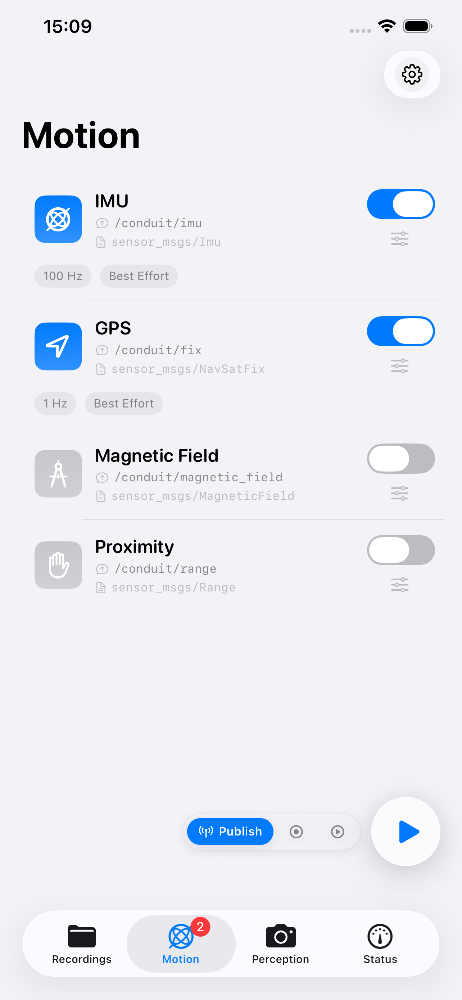
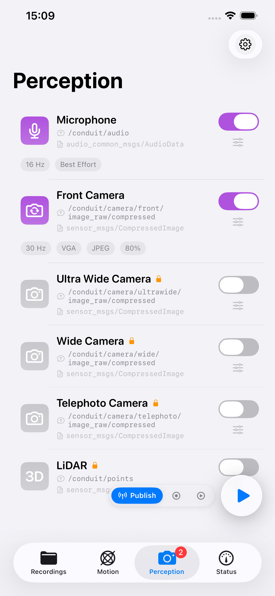
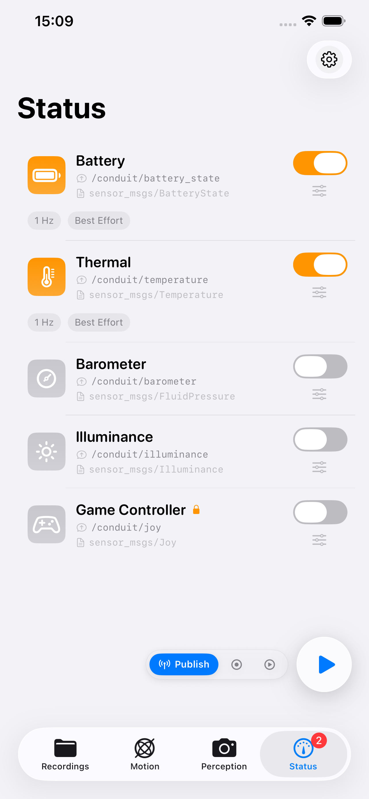
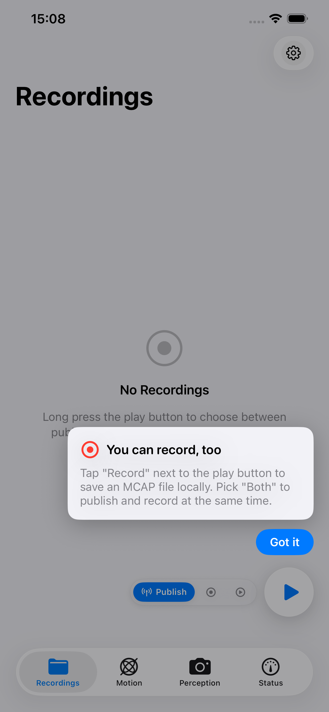
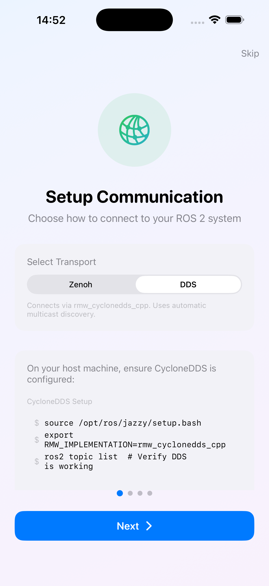
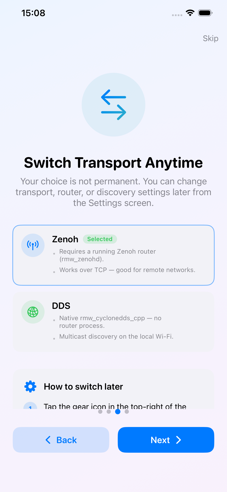
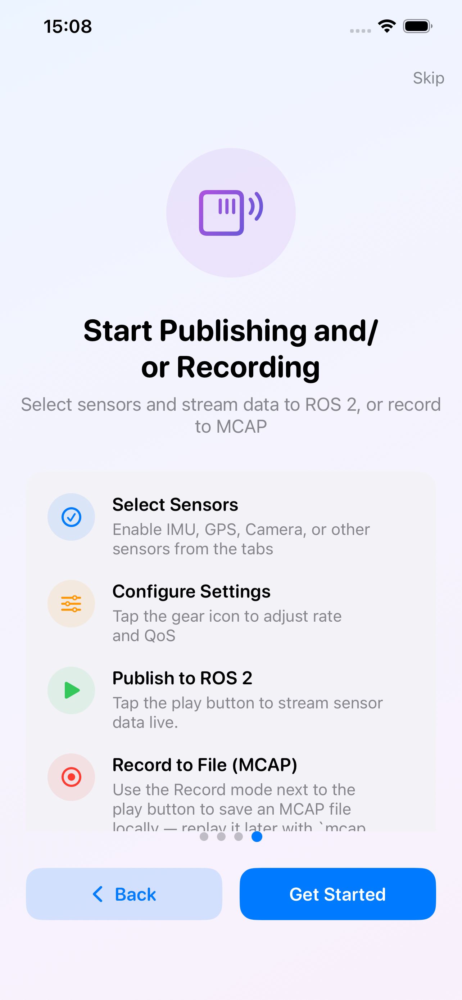
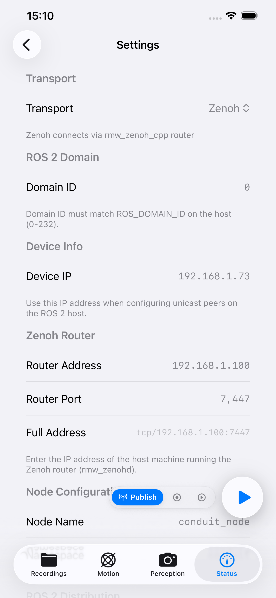

Conduit
Stream 12 real-time sensors from iPhone, iPad, Mac, and Apple Vision Pro straight into your ROS 2 graph — Zenoh or DDS, no bridge required.
Transform your Apple devices into ROS 2 sensor publishers
Stream real-time sensor data directly to your robotics system via Zenoh or DDS — pick the transport that matches your ROS 2 setup. No bridge, no rcl / rclcpp, no CMake on a non-Linux host.
Used cumulatively by 10,000+ ROS 2 developers worldwide — has ranked as high as #4 in the App Store's Developer Tools category (Japan) since January 2026.
Demo Videos
|
Teleoperation Control robots using Game Controller sensor via ROS 2 joy messages |
Camera & LiDAR Stream iPhone camera images and LiDAR point clouds to ROS 2 |
Getting Started Step-by-step guide to connect Conduit with your ROS 2 system |
|
Cyclone DDS Native ROS 2 communication over Cyclone DDS — no Zenoh router, no bridge |
MCAP Recording Record every topic and export an MCAP file for Foxglove or ros2 bag |
Built on swift-ros2
All ROS 2 wire work — Zenoh / DDS FFI, XCDR v1 codec, Humble/Jazzy/Kilted/Rolling wire codecs, the publisher/subscription API — is delegated to swift-ros2, a native Swift client library for ROS 2 that was extracted from Conduit and now ships independently.
swift-ros2 covers every consumer device OS that runs Swift: iOS / iPadOS / macOS / Mac Catalyst / visionOS (pre-built xcframeworks via SwiftPM), plus Linux (Ubuntu 22.04 / 24.04, x86_64 + aarch64), Windows (x86_64), and Android (arm64-v8a + x86_64) via source build. By worldwide market share, that's roughly 90%+ of identifiable consumer devices — phones, tablets, laptops, headsets, SBCs — all able to publish and subscribe through the same SwiftPM-resolvable package.
If you want to wire your own Swift app into a ROS 2 graph (rather than use Conduit as a black-box sensor publisher), swift-ros2 is the SDK underneath this app.
Features
| Platform | Sensors |
|---|---|
| iOS / iPadOS 16+ | All 12 sensors |
| visionOS 1+ | Camera, IMU, Game Controller |
| macOS 13+ (Mac Catalyst) | Camera, Battery, Game Controller |
Transports
| Transport | ROS 2 RMW | Bridge required | Best for |
|---|---|---|---|
| Zenoh | rmw_zenoh_cpp |
Yes (Zenoh router) | Cross-subnet, WAN, corporate networks |
| DDS | rmw_cyclonedds_cpp |
No (direct) | Same-LAN, standard ROS 2 |
See TRANSPORTS.md for a detailed comparison.
12 Sensor Types
- Motion: IMU (100Hz) · Magnetometer (100Hz) · GPS (1Hz) · Proximity (10Hz)
- Perception: Camera (30Hz) · LiDAR (30Hz) · Microphone (
audio_common_msgs/AudioData, streaming) - Environment: Barometer (10Hz) · Illuminance (10Hz) · Thermal (1Hz)
- Input: Game Controller (50Hz)
- Status: Battery (1Hz)
MCAP Recording
Capture every published topic to a local MCAP file with one tap, replay it later in Foxglove, ros2 bag play, or any MCAP-aware tool. Recordings live in the app's Documents directory and ship out via the standard share sheet (Files, AirDrop, Mail, …) — Conduit never uploads them. Schemas are written into the MCAP header automatically so the bag round-trips through any reader without external .msg files.
Same wire path as live publishing: the same XCDR v1 encoder from swift-ros2 feeds both the Zenoh / DDS publisher and the MCAP writer, so the on-disk bytes match what arrives on the ROS 2 graph.
In-App Purchases
A core slice (IMU, Magnetometer, GPS, Proximity, Barometer, Illuminance, Thermal, Battery, Microphone, Front camera) ships free. Wide / Ultra-wide / Telephoto cameras, LiDAR, Game Controller, Background publishing, and MCAP Recording are unlocked individually via App Store In-App Purchases.
Screenshots
Main Tabs
|
 Motion IMU, GPS, Magnetometer, Proximity |
 Perception Microphone, Camera, LiDAR |
 Status Battery, Thermal, Barometer, Illuminance, Game Controller |
 Recordings MCAP bags — record alongside or instead of live publishing |
Onboarding & Settings
|
 1. Setup Communication Pick Zenoh or DDS, follow the host-side recipe |
 2. Switch Transport Anytime Change transport, router, or discovery later from Settings |
 3. Publish or Record Tap Play to stream, or Record to save an MCAP file |
 Settings Transport, Domain ID, Device IP, Router address |
Quick Start
- Download from the App Store
- Choose your transport — see TRANSPORTS.md
Quick Start — Zenoh
- Start the Zenoh router on your ROS 2 system:
source /opt/ros/jazzy/setup.bash export RMW_IMPLEMENTATION=rmw_zenoh_cpp export ROS_DOMAIN_ID=0 # Valid range: 0-232 ros2 run rmw_zenoh_cpp rmw_zenohd - In the Conduit app: Settings → Transport: Zenoh, enter the host IP and port
7447, set Domain ID to match. - Enable sensors and tap Play.
- Verify:
ros2 topic echo /conduit/imu
Quick Start — DDS
- On your ROS 2 host:
source /opt/ros/jazzy/setup.bash export RMW_IMPLEMENTATION=rmw_cyclonedds_cpp export ROS_DOMAIN_ID=0 # Valid range: 0-232 # If you previously ran ros2 commands under a different RMW # (e.g. rmw_zenoh_cpp), restart the cached ros2 daemon so it picks up # the new RMW_IMPLEMENTATION / ROS_DOMAIN_ID / CYCLONEDDS_URI. ros2 daemon stop ros2 daemon start # optional — `ros2 topic list` will autostart it ros2 topic list - In the Conduit app: Settings → Transport: DDS, Discovery Mode: Hybrid, add the host IP to Unicast Peers, Network Interface:
en0, set Domain ID to match. - Enable sensors and tap Play.
- Verify:
ros2 topic echo /conduit/imu --qos-reliability best_effort
Note: Re-run
ros2 daemon stopany time you changeRMW_IMPLEMENTATION,ROS_DOMAIN_ID,CYCLONEDDS_URI, or the unicast peer list — the daemon caches the first context and silently ignores later env-var changes. See TROUBLESHOOTING.md for the full failure mode.
Docker Test Environments
Zenoh Router (Docker)
Pre-built images on ghcr.io:
# ROS 2 Jazzy
docker run -d -p 7447:7447 --name ros_jazzy_zenoh ghcr.io/youtalk/conduit-support:jazzy
# ROS 2 Humble
docker run -d -p 7447:7447 --name ros_humble_zenoh ghcr.io/youtalk/conduit-support:humble
Or with Docker Compose:
git clone https://github.com/youtalk/conduit-support.git
cd conduit-support/docker
# Default domain ID (0)
docker compose up ros-jazzy -d
# Custom domain ID via .env (recommended for persistence)
echo "ROS_DOMAIN_ID=5" > .env
docker compose up ros-jazzy -d
# Or override per-invocation
ROS_DOMAIN_ID=5 docker compose up ros-jazzy -d
# Stop
docker compose down
DDS Subscriber (Docker, Linux only)
macOS note: Docker Desktop on macOS does not provide true host networking, so the container cannot receive DDS traffic from an iOS device on the same LAN. On macOS, run your DDS subscriber natively or in a Parallels/UTM VM.
cd conduit-support/docker
echo "ROS_DOMAIN_ID=0" > .env
docker compose -f compose-dds.yml up -d
# Verify
docker exec -it ros_jazzy_dds bash
source /opt/ros/jazzy/setup.bash
ros2 topic list
ros2 topic echo /conduit/imu --qos-reliability best_effort
See docker/README.md for the complete Docker guide.
Documentation
- Transports — Zenoh vs DDS comparison and when to use each
- FAQ — Frequently asked questions
- Troubleshooting Guide — Common issues and solutions
- Platform Notes — Platform-specific information
- Known Issues — Current limitations and workarounds
- Privacy Policy — Data handling, sensor permissions, analytics